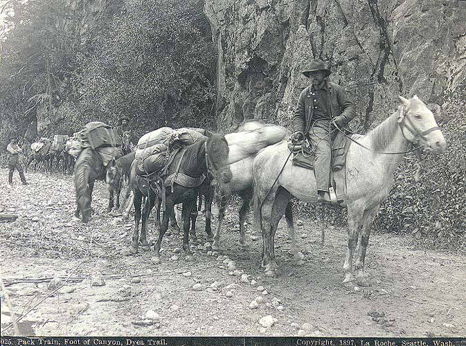

Chapter 4
The Law of the Trail
The secret was ending. It moved with the current, dissolved in the freshet, carried in the bilges of steamers working down the Yukon toward Saint Michael and the open ocean. But between the secret and the world lay a barrier more absolute than distance or ice. The coast of Southeast Alaska is a wall of mountains, rising straight from salt water to heights of four and five and seven thousand feet, cut by narrow fjords, draped in glacier and rain forest, backed by range upon range of interior peaks. There is no gentle way through. There is no river wide enough to carry a boat from the interior to the sea. There are only passes, narrow and high and wind-scoured corridors between peaks, and the passes dictate everything.
In the summer of 1897, a Tlingit packer stood at the foot of the Chilkoot Trail near the settlement of Dyea, Alaska, negotiating the price of a load. The scene was unremarkable in its elements. It had been repeated for generations.
The Tlingit of the coastal villages, Dyea, Klukwan, Chilkat, had held the trade routes across the mountains for at least a century, controlling access to the interior Yukon through a network of trails that followed the Taiya River up from tidewater, climbed the Chilkoot Pass to the headwaters of the Yukon watershed, and descended to the chain of lakes, Crater, Long, Deep, Lindeman, Bennett, that fed the river system flowing northwest to the Klondike. The Chilkoot Trail spanned between twenty-eight and thirty-three miles from sea level at Dyea to Lake Bennett, British Columbia, an elevation gain of 2, 602 feet.
The Tlingit charged for passage. They carried goods for hire. They enforced their monopoly with the same quiet authority that the mountains enforced their own geometry.
The packer named his price. The prospector, or trader, or missionary who needed the load carried paid it or did not. There was no negotiation in the modern sense. The price reflected the difficulty of the route, the weight of the load, the condition of the trail, the season, and the simple fact that no alternative existed. A man could refuse the terms. He could not refuse the mountain.
The Chilkoot was a route in the way a river is a route, a feature of topography that permits passage under certain conditions and punishes passage under others. From the tidal flats at Dyea, where the Taiya Inlet narrowed to a river mouth, the trail followed the valley floor through spruce and hemlock forest, over glacial outwash plains, through stands of cottonwood, climbing gradually for the first dozen miles to a point called Sheep Camp.
At Sheep Camp the gradient changed. The valley closed. The timber thinned. The trail entered a canyon of rock and ice where the Taiya River ran fast and shallow over boulders, and the route climbed along its bank through a series of stone shelves and snow bridges to a basin called the Scales. At the Scales, the trail reached approximately three thousand feet above sea level. Above the Scales rose the final pitch: a slope of stone and snow angling upward at better than thirty degrees, funneling to a notch in the ridge, the summit of Chilkoot Pass, at an elevation of approximately three thousand seven hundred feet.
The pass itself was a gap in the mountains perhaps wide enough for four men walking abreast—a cut, a notch, a door in a wall. On the far side, the trail dropped steeply into Crater Lake, a small tarn at the headwaters of the Yukon drainage, and from there descended through a series of lakes and short connecting streams to Lake Lindeman and Lake Bennett, where the lakeshed gave way to the Yukon River system and the long water route to the interior.
The eastern door was Chilkoot Pass. The western door was the Pacific Ocean, and between them lay thirty miles of terrain more unforgiving than any other migration route in North America had to offer.
The White Pass offered an alternative, and in the summer of 1897 it was beginning to attract attention. The White Pass route began at Skagway, a settlement at the head of Lynn Canal approximately ten miles northwest of Dyea by water. Skagway in the summer of 1897 was barely a settlement at all, a collection of tents and rough cabins on a tidal flat at the mouth of the Skagway River, backed by a valley that climbed more gradually than the Dyea route toward a lower summit.
The White Pass crested at approximately two thousand nine hundred feet, lower than Chilkoot, and the approach from Skagway was less steep in its initial stages. The pass descended on the far side to the headwaters of the Yukon River system, eventually reaching Lake Bennett by a different drainage. Of the several overland routes, the Chilkoot Trail was the most direct, least expensive, and soon the most popular, but the rival White Pass route, based out of Skagway, was slightly longer but less rigorous and steep.
The White Pass had its own laws. The trail was longer, the ground was boggy in the lower stretches, and the route crossed muskeg and scree fields that could swallow a pack animal to the knees. The lower grade made it more suitable for pack horses, and in the summer of 1897 horses were already arriving at Skagway by the hundreds, purchased at inflated prices in Seattle and Victoria and shipped north. At Dyea, even poor quality horses could sell for as much as seven hundred dollars. They could be rented for forty dollars a day. The economics of the packing trade were already, in the summer of 1897, beginning to distort under the first pressure of demand, before the full weight of the stampede had been felt.
The two routes, Chilkoot and White Pass, were rigid, unforgiving systems governed by natural law and human regulation long before the stampede began. The natural law was the law of gravity, of altitude, of the human body’s capacity to carry weight over distance and elevation gain.
A packer carrying fifty pounds on his back from Dyea to Lake Lindeman, a distance of roughly thirty-three miles with an elevation gain and loss of nearly four thousand feet, could make the trip in two days if he was experienced and the trail was in good condition. A man carrying his own outfit, unacclimated, unfamiliar with the route, carrying seventy or eighty pounds, might take four days or six. He would need to cache supplies along the way and return for additional loads.
The mathematics of the passage were simple and pitiless: a man with a year’s supply of food and gear, totaling a thousand pounds or more, would need to walk the trail ten times or twenty times to move his entire outfit across. Or he would need to hire packers. Or he would need to buy horses.
The human regulation was older than the Canadian authority that would later formalize it. The Tlingit controlled the trail. They set the terms of passage. They charged tolls. They carried goods for hire at rates they determined, and they enforced their monopoly through a combination of trade relationships, territorial sovereignty, and the simple physical fact that no one else knew the route well enough to traverse it without their guidance. The Tlingit were not guides or porters in the service of a passing trade. They were the owners and operators of a transportation system, and they had been for generations.
The North-West Mounted Police were aware of the trails. They had been aware of them since the force’s first patrols into the Yukon interior in the early 1890s, when small detachments had established posts at Forty Mile and, later, at Dawson City, near the mouth of the Klondike River. The police were a small presence, a handful of officers and constables scattered across a territory larger than several European nations combined, but they represented something that the American side of the border did not: a continuous, organized authority with the power to regulate entry, enforce law, and maintain order in the name of a sovereign state.
The principle that would become the ton rule was already forming in 1897, before the stampede began. The Canadian authorities introduced rules requiring anyone entering Yukon Territory to bring with them a year’s supply of food. The requirement was not arbitrary; it was designed to prevent starvation. The interior Yukon was a region without agriculture, without roads, without supply lines adequate to support a large population. The rivers froze in October and did not break up until May or June. During eight months of winter no supplies could reach the interior by water. If a man arrived in Dawson City in September without enough food to last until spring thaw, he would starve; if a thousand men arrived without enough food, all would starve.
The police had seen starvation in the Canadian West; they had dealt with unregulated migration into regions that could not support human life. Self-sufficiency was survival codified rather than bureaucracy imposed.
Shortly after 1897 began its rush northward—the exact date is disputed—the Canadian authorities formalized rules requiring anyone entering Yukon Territory to bring with them roughly 1, 150 pounds of food per person; once camping equipment and tools were added most travellers carried close to one ton.
The requirement, a year’s supply, approximately one ton of goods per person, was the mechanism that would transform the Klondike gold rush from a prospecting venture into a logistical operation of unprecedented scale. A mandate to carry provisions drew merchants and outfitters into the supply chain, and the commerce that followed required more regulation and more infrastructure, perpetuating the rush. The ton rule would generate bills of lading, customs invoices, and commercial receipts, a paper trail that would make the stampede legible to authority in ways that the physical trail, with its chaos of mud and stone and human endurance, could never be.
But in 1897 this remained only conditions rather than an operating system: trails existed; Tlingit trade networks existed; police posts existed; self-sufficiency as principle existed—and cracks were beginning to show in containment of what had been secret.
The Klondike Gold Rush transformed the Chilkoot Trail into a mainstream transportation route to Canada’s interior. Of the several overland routes, the Chilkoot Trail was the primary path, and it had been an existing Tlingit trade route to reach the lakes before any prospector set foot on it. The transformation was not one of construction but of volume. The trail did not change. The traffic changed. A route that had carried a few hundred loads per season for the Tlingit trade was about to carry tens of thousands of men and their tons of goods. The gold rush was primarily focused in the region around Dawson City in Yukon and the Yukon River.
There were other routes. The Dalton Trail started from Pyramid Harbour, close to Dyea, and went across the Chilkat Pass some miles west of Chilkoot, turning north to the Yukon River. The Dalton was longer and lower, suitable for cattle drives, and it would see use in 1898. The Edmonton overland routes, approaching the Yukon from the east through the Peace River country and the Mackenzie drainage, were longer still, hundreds of miles of muskeg, river, and unbroken wilderness. The all-water route from Saint Michael, Alaska, up the Yukon River by steamboat, was the most comfortable passage in summer, but the season was short and the steamers were few. The Chilkoot and White Pass routes, from the Southeast Alaska ports of Dyea and Skagway, were the shortest and most direct overland paths from salt water to the Yukon River system. They would carry the vast majority of the stampeders.

The geography of the routes determined the geography of the boom towns. Dyea sat at the foot of the Chilkoot, a tidal flat at the convergence of the Taiya River and Taiya Inlet. It had a shallow harbor that could accommodate smaller vessels at high tide but was too shallow for the larger ships that would arrive with the stampede.
Skagway, ten miles northwest, had a deeper anchorage and a broader valley, and it would grow faster and larger. Both towns existed because of the trails. They were the ports of entry, the places where goods were unloaded from ships and organized for transport over the passes. They were the points at which the oceanic supply line met the mountain barrier, and the friction of that meeting would generate commerce, conflict, and a degree of human congestion that the coast of Alaska had never seen.
Soon, both Skagway and Dyea were bustling tent cities as sensationalist headlines of the gold rush spurred men from across the United States to leave their jobs and families and gain passage up the Inside Passage to Skagway.
The police watched. Their posts were far inland, at Forty Mile and at the confluence of the Klondike and Yukon rivers, where the gold had been found. But their authority extended to the border. The summit of Chilkoot Pass was the boundary between the United States and Canada, marked by a cairn and two posts. The summit of White Pass was likewise a boundary point. Any person crossing into Canadian territory was subject to Canadian law, and Canadian law, as administered by the North-West Mounted Police, would require that person to demonstrate self-sufficiency.
“A mere handful of this fine military force sufficed to introduce law and order into the country from 1897 onward,” one observer wrote later; “the perfect quiet which prevailed on Canada’s side contrasted most favorably with lawlessness on America’s.” That contrast came from deliberate policy—presence regulation applied as logistics rather than endurance treated as natural phenomenon—so even disorderly migrants seemed less disorderly once inside Klondike territory: six-shooters disappeared from view.
At the summit, a constable would set a scale. Outfits would be weighed. Supplies would be counted. Anyone who could not demonstrate that he carried enough food to survive a year in the interior would be turned back. The scale was the instrument of policy, and the policy was the codification of a principle that the mountains had always enforced, silently, through their own geometry: a man who crosses this pass must carry what he needs to live, because nothing on the far side will provide it.
In the summer of 1897, the first informed parties were already moving. Men who had heard rumors from the interior, who had connections to the trading posts or the mining camps, who had received letters from friends or partners in the Yukon, were beginning to arrive at Juneau and Dyea and Skagway. A trickle, not yet a stampede. The first water through a crack in a dam. But enough to strain the existing infrastructure. Tlingit packers were busier than they had been in years. The price of horses was rising. Traffic the trail had not been built to accommodate was already wearing ruts into the valley floor.
The massive influx of prospectors would drive the formation of boom towns along the routes of the stampede, with Dawson City in the Klondike the largest. The new towns would be crowded, often chaotic, and many would disappear just as soon as they came. Dyea would be one of the disappeared. Skagway would survive. The boom towns were artifacts of the barrier, the places where human beings gathered at the base of a wall they could not climb without preparation, and where they organized, purchased, hired, and prepared before attempting the passage.
“The wall was trail; trail was law—not police law yet but mountain law: weight distance altitude body capacity.” Police would codify it into ton weights food requirements customs declarations legible enforceable institutional control—but older than police older than mountains themselves.
The trail waited. It had waited for centuries, a corridor of stone and ice between the coast and the interior, carrying what the Tlingit carried, enforcing what the mountains enforced. The trickle of informed travelers passing through in the summer of 1897 was the leading edge of a flood that would bring thirty thousand or forty thousand people to its stones, its snowfields, its summit notch, in the space of eighteen months. The ton rule, being formulated in a police office hundreds of miles away, would turn its thirty-three miles of rock and ice into a logistical corridor of unprecedented human traffic, a filter through which every man who sought the gold of the Klondike would have to pass, carrying on his back or on the back of an animal the weight of a year’s survival.
“Trail did not know these things but trail ready always ready rigid waiting system indifferent whether one man walked it or forty thousand.” Mountain enforced same law each time: pack weight grade steepness thinning air narrowing path brutal fact no carry no get far side.
The first boats were already moving down the Yukon River. They carried gold and letters. They carried the secret, which was no longer a secret but a fact, physical and heavy, moving toward the sea. The trails waited between the fact and the world. The police prepared their regulations. The Tlingit held their prices. The mountain held its line. And somewhere in an office in Ottawa or Regina, a clerk was writing the rule that would turn a route into a corridor and a corridor into an engine, the rule that said a man must carry a ton of goods to cross into the Yukon, and that the ton must be weighed, and that the weighing must be recorded, and that the record must be kept.
The trail did not know. But the trail was ready.